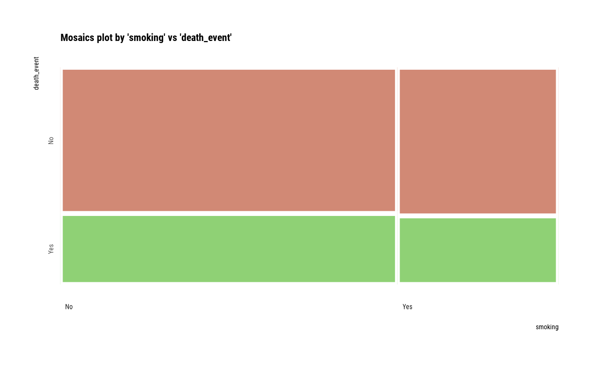

Visualize mosaics plot by attribute of compare_category class.
# S3 method for compare_category plot(x, prompt = FALSE, na.rm = FALSE, ...)
Arguments
| x | an object of class "compare_category", usually, a result of a call to compare_category(). |
|---|---|
| prompt | logical. The default value is FALSE. If there are multiple visualizations to be output, if this argument value is TRUE, a prompt is output each time. |
| na.rm | logical. Specifies whether to include NA when plotting mosaics plot. The default is FALSE, so plot NA. |
| ... | arguments to be passed to methods, such as graphical parameters (see par). However, it does not support all parameters. |
See also
Examples
# Generate data for the example carseats <- ISLR::Carseats carseats[sample(seq(NROW(carseats)), 20), "Income"] <- NA carseats[sample(seq(NROW(carseats)), 5), "Urban"] <- NA # Compare the all categorical variables all_var <- compare_category(carseats) # Print compare class object all_var#> $`ShelveLoc vs Urban` #> # A tibble: 8 x 6 #> ShelveLoc Urban n rate var1_rate var2_rate #> <fct> <fct> <int> <dbl> <dbl> <dbl> #> 1 Bad No 22 0.055 0.229 0.190 #> 2 Bad Yes 73 0.182 0.760 0.262 #> 3 Bad NA 1 0.0025 0.0104 0.2 #> 4 Good No 28 0.07 0.329 0.241 #> 5 Good Yes 57 0.142 0.671 0.204 #> 6 Medium No 66 0.165 0.301 0.569 #> 7 Medium Yes 149 0.372 0.680 0.534 #> 8 Medium NA 4 0.01 0.0183 0.8 #> #> $`ShelveLoc vs US` #> # A tibble: 6 x 6 #> ShelveLoc US n rate var1_rate var2_rate #> <fct> <fct> <int> <dbl> <dbl> <dbl> #> 1 Bad No 34 0.085 0.354 0.239 #> 2 Bad Yes 62 0.155 0.646 0.240 #> 3 Good No 24 0.06 0.282 0.169 #> 4 Good Yes 61 0.152 0.718 0.236 #> 5 Medium No 84 0.21 0.384 0.592 #> 6 Medium Yes 135 0.338 0.616 0.523 #> #> $`Urban vs US` #> # A tibble: 6 x 6 #> Urban US n rate var1_rate var2_rate #> <fct> <fct> <int> <dbl> <dbl> <dbl> #> 1 No No 44 0.11 0.379 0.310 #> 2 No Yes 72 0.18 0.621 0.279 #> 3 Yes No 95 0.238 0.341 0.669 #> 4 Yes Yes 184 0.46 0.659 0.713 #> 5 NA No 3 0.0075 0.6 0.0211 #> 6 NA Yes 2 0.005 0.4 0.00775 #># Compare the two categorical variables two_var <- compare_category(carseats, ShelveLoc, Urban) # Print compare class object two_var#> $`ShelveLoc vs Urban` #> # A tibble: 8 x 6 #> ShelveLoc Urban n rate var1_rate var2_rate #> <fct> <fct> <int> <dbl> <dbl> <dbl> #> 1 Bad No 22 0.055 0.229 0.190 #> 2 Bad Yes 73 0.182 0.760 0.262 #> 3 Bad NA 1 0.0025 0.0104 0.2 #> 4 Good No 28 0.07 0.329 0.241 #> 5 Good Yes 57 0.142 0.671 0.204 #> 6 Medium No 66 0.165 0.301 0.569 #> 7 Medium Yes 149 0.372 0.680 0.534 #> 8 Medium NA 4 0.01 0.0183 0.8 #>#> Hit <Return> to see next plot:#> Hit <Return> to see next plot:#> Hit <Return> to see next plot: